23
in my world.
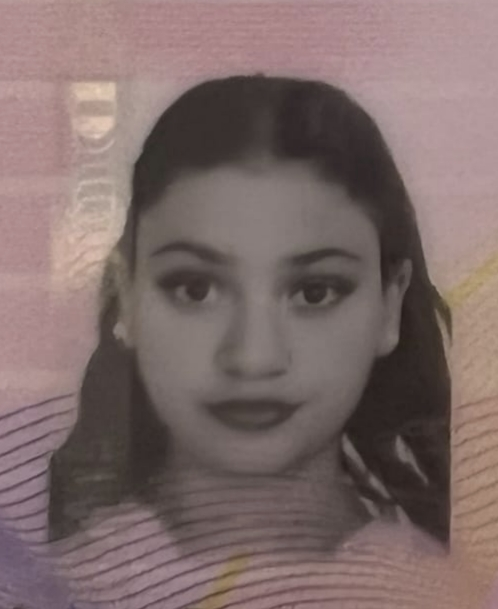
Nantes, France To Nune
Vienna, Austria
FOR PASSENGER 23
Happy birthday,
my love.
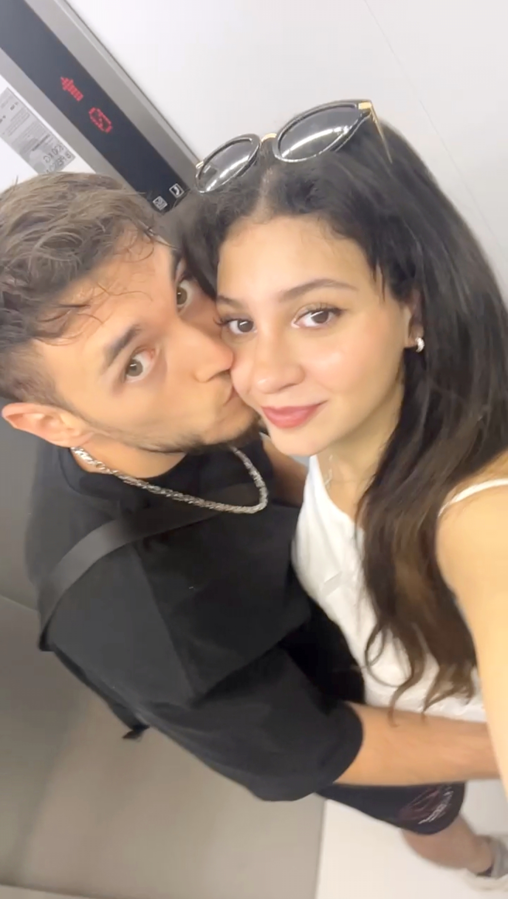
Well Well Well, some people turn 23 today 👀.
My love, today is your day. The day you were born 23 years ago, with that number you love so much — one that today feels like it was made just for you.
Since February, our story has taken a place in my life I could never have planned for. And even though Nantes and Vienna stand between us right now, I've never felt that the distance could really pull us apart.
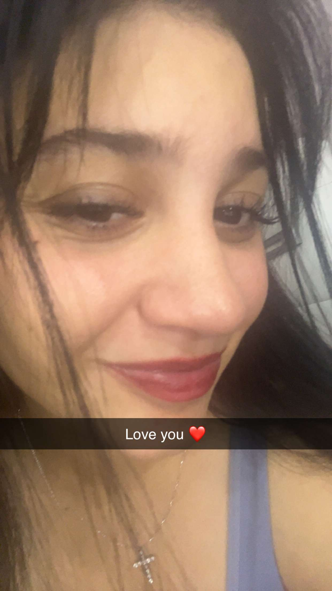
You've taught me so many things since you came into my life. You taught me what it really means to love someone, to care for someone, to share your life with someone. You taught me how beautiful it can be to have someone by your side, to share the smallest moments, the biggest ones, the laughs and everything in between.
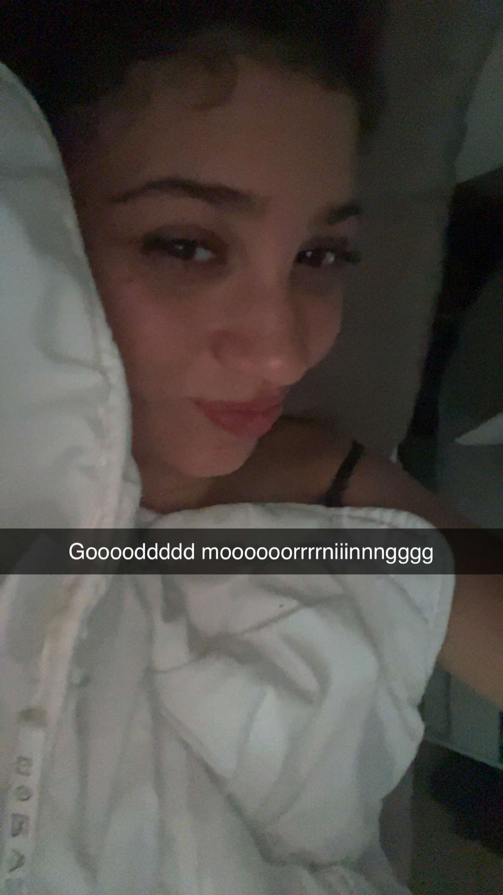
I'm so grateful for everything we've been through together, and I'm so happy with the path we're building, just you and me. When I look back at where we started and where we are now, I can feel how much we've both grown. We've learned how to understand each other better, how to communicate, and most importantly, how to keep choosing each other no matter what.
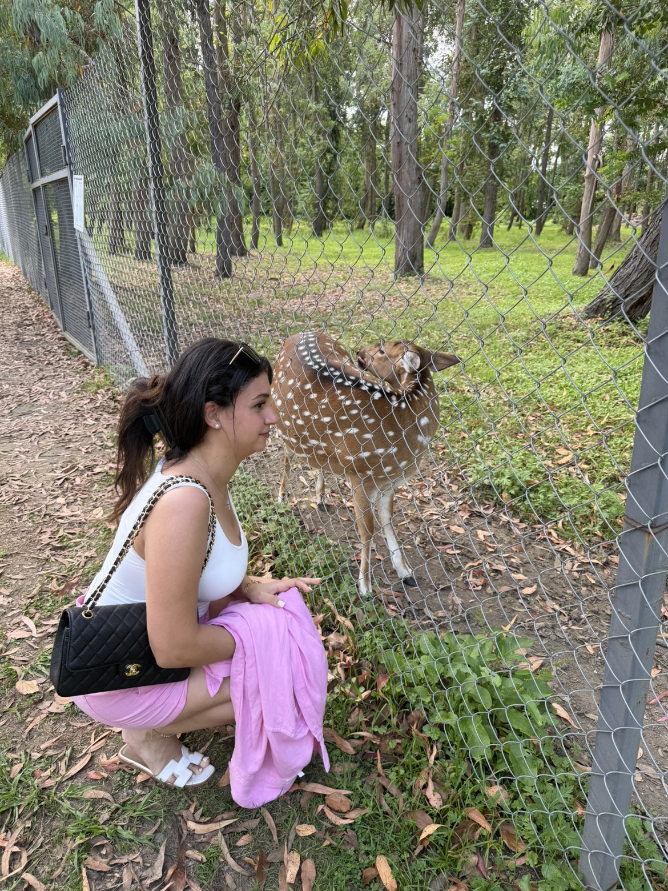
And even with the distance between us now, I feel like we're stronger than ever. We've figured out how to make it work. We've found our own way of being together, even when we're miles apart. And somehow, knowing that we can get through this makes me even more excited for everything that is still waiting for us. It was really hard saying goodbye in Nantes, but we’re never apart.
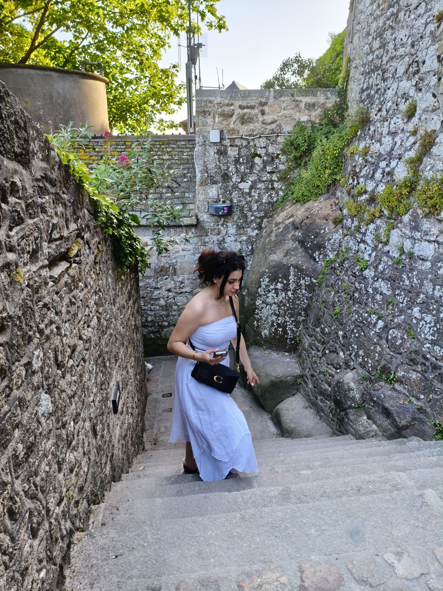
You have become the most important person in my life. I love you more than anything, and you mean more to me than I could ever properly put into words. You are the person who brings me the most joy and happiness, the person who gives me the most strength and makes me want to keep going, the person who motivates me every single day. You are the reason I wake up every morning, the person I want to share my days with, my thoughts with, my dreams with and my life with.
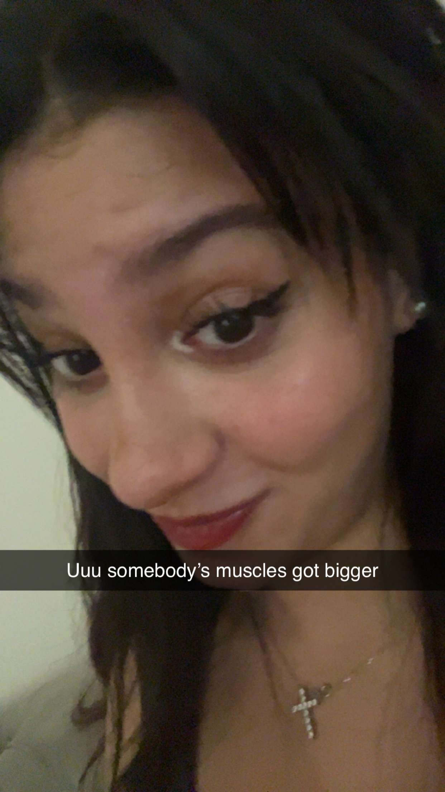
I love when you show me your outfits, you are such an amazing women. I love all of you, your hair, your smile, your eyes, your lips, your body, your muscles, your boobs, your butt... It's beacause your 10k steps or your "almost gym session" WOW so many muscles. But less than me of course 😉.
"Two cities. Miles between us. And yet, every time I think of you, you feel like you're right next to me."
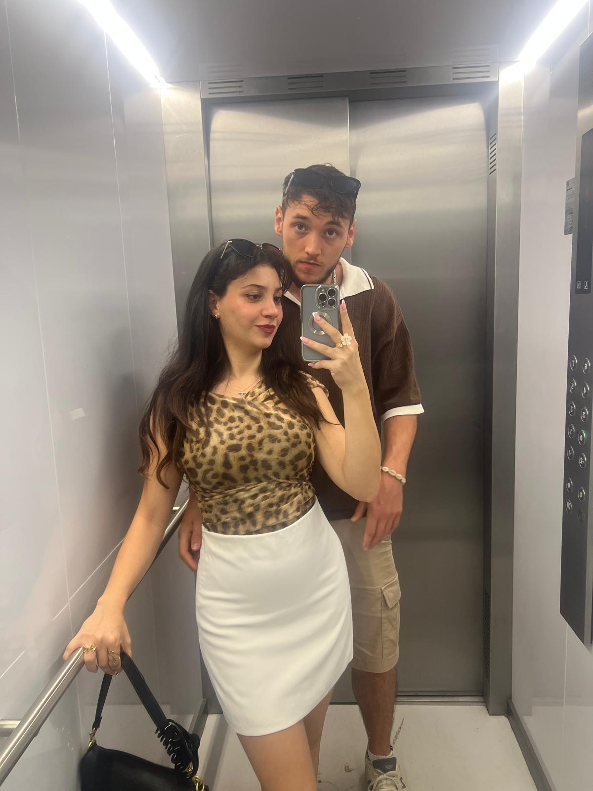
And then there was Lisbon. We had been waiting for this for so long, and it was magical. Six days that belonged only to us. Six days without counting the hours until a call, without counting the miles until we could finally see each other again. Just us, together, in a new city, in another country, with no one around us that we knew.
Those six days were incredible, and I think they made me understand even more how good I feel with you. Walking with you, laughing with you, discovering a city together, dancing, eating, getting lost, finding our way again, and simply enjoying every moment… That's exactly the kind of memories I want to keep building with you.
And it went by so fast. I still can't believe it. Even though, as always, time flies with you.
I still remember the moment we finally saw each other. The feeling it gave me is indescribable. We couldn't stop touching each other, looking at each other in the taxi, almost as if we needed to make sure we were really together. All we wanted was to be alone together, finally be close to each other and kiss. After waiting all that time, finally having you next to me was just incredible.
Our first day, going grocery shopping together, walking around the city, discovering Lisbon, simply enjoying being in another country, just the two of us, without knowing anyone… I loved that feeling so much. It felt like the world belonged to us for a little while.
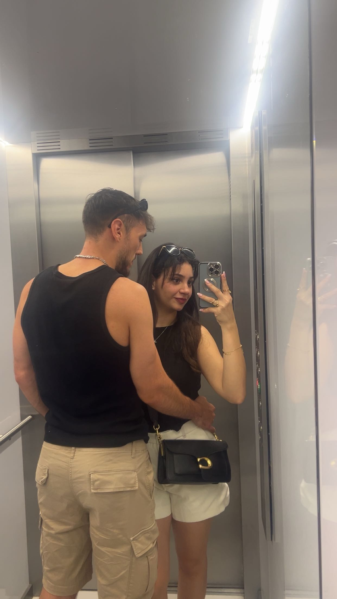
And then that evening, we almost randomly ended up at that place where people were dancing. And that's when I also realized how much I love dancing with you. I love those moments when it's just the two of us, completely in our own little world, without caring about anything happening around us.
And your gift… I want you to know how much it means to me. I don't think you realize how much I treasure the things you give me. Your necklace, the bracelet you gave me before… I treasure them more than anything. Whenever I wear them, I always feel like I have a little piece of you with me. These things give me so much strength, because they remind me that you are with me, even when you're far away.
I hope my gifts make you feel the same way. But honestly, you deserve so much more. You are such an exceptional person, and I wish I could give you everything you deserve.
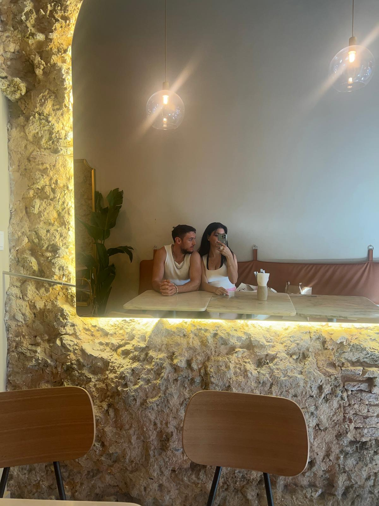
I loved our walks too. That day on the boat, with that beautiful sunset on the deck… Those moments when we weren't doing anything extraordinary, but I was simply happy because I was with you.
And that famous walk to see the statue that was actually closed… so annoying ahahah. But in the end, we had the best fries in the world, so I guess it was worth it.
Every moment with you was incredible.

I was so happy that I got to try Armenian food — even though I know your mom's cooking, or the food directly in Armenia, is better hahah. I love discovering your culture through you. I love seeing how proud you are of your roots, how you always tell me that “this is better in Armenia” or that “this tastes better,” and especially when someone asks you where you're from and you answer that you're Armenian with that big smile hahah.
It genuinely makes me smile to see you so proud of your roots. And I can't wait to discover Armenia with you one day, to see your country through your eyes, discover all the things you love, and share all of that with you.
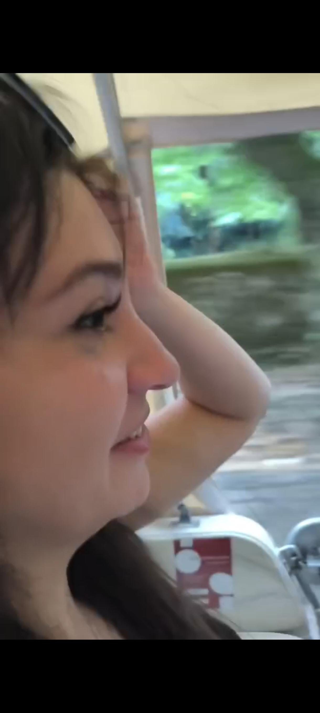
Sintra was beautiful too. Even though you were feeling a little sick at first, you felt much better afterwards and we had that completely crazy tuk-tuk moment ahahah. I loved it.
And sometimes, it's the simplest moments that I love the most. Just sitting there with you, chilling, you drinking your coffee and me eating a pastel de nata… Just thinking about it already makes me nostalgic. It is so precious to me to be by your side.
I also loved that evening when we danced at that bar. I think it was my favorite. Because I felt like I got to see you happy every single second.
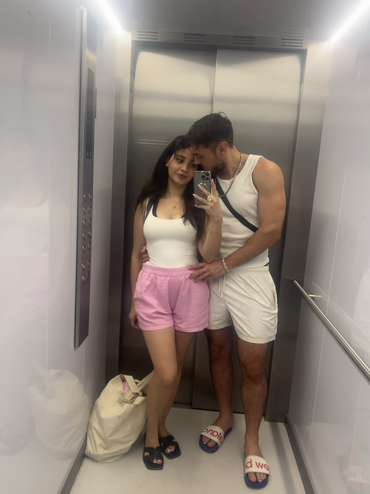
The way we looked into each other's eyes, the way you screamed every time one of your favorite songs came on, the way we danced… I think if people were watching us, they probably thought we were completely crazy hahah.
But that's exactly what I loved about it.
I felt like you completely let go with me. Like you weren't afraid of anything, like you felt safe, and like you were simply, completely happy.
And seeing you like that, seeing you smile, laugh, and enjoy every second… There is genuinely nothing that makes me happier.
And I LOVED your outfit. Your skirt, your clac clac, your top around your neck… You were absolutely radiant, my love. I still can't believe how unbelievably beautiful you are.
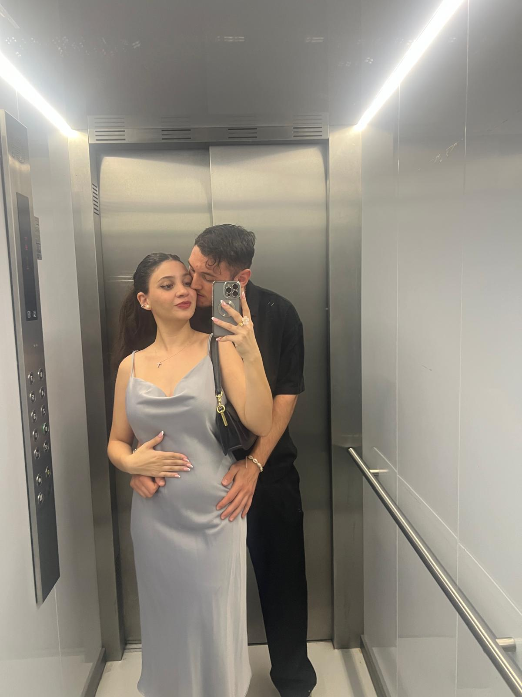
When I see you happy, I feel like I'm capable of anything. I feel so good by your side, as if I am exactly where I'm supposed to be. With you, I feel like I'm truly living.
I also loved every night and every morning with you. Falling asleep with you in my arms and waking up with you still in my arms… I don't think there is anything better in the world. I want more and more of it.
We were so comfortable together that we sometimes struggled to get out of bed, and our days started at 5 PM ahahah. Crazy.
Our beach day was incredible too. And most importantly, you managed to do the most important thing: not to be dramatic ahahah. I'm so proud of you.
Even simply eating churros with you makes me happy.
And even though that day, and already the day before, I could feel that you were more emotional because we knew the end was getting closer, I knew there were moments when I almost shouldn't look you in the eyes because you might start crying.
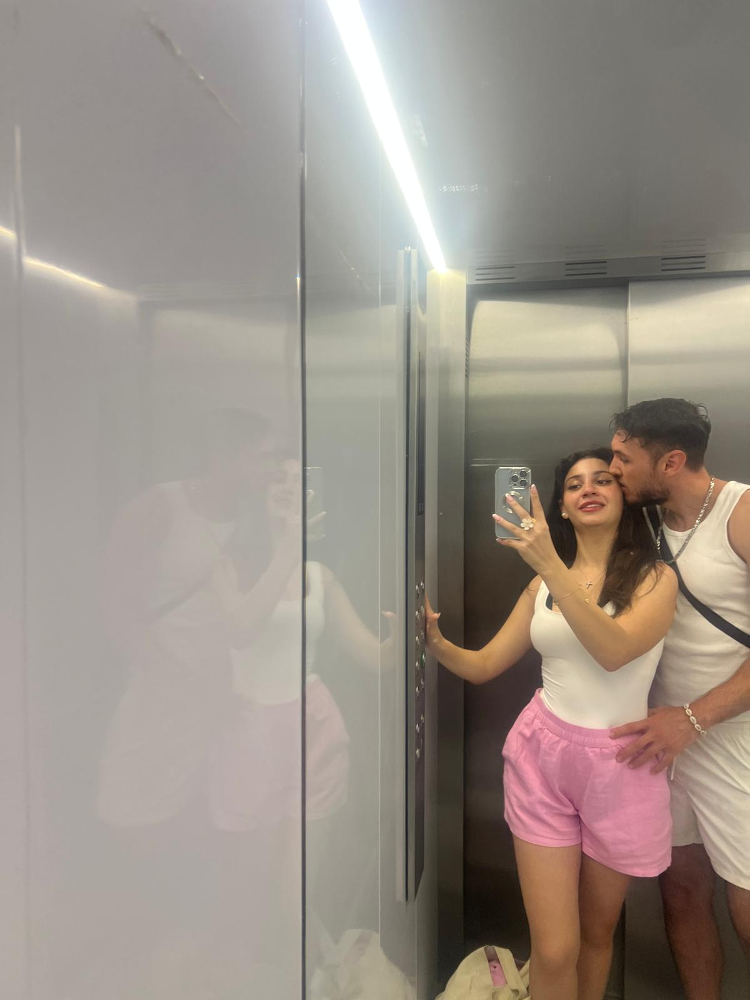
It's hard for me to see you like that too. But I try to stay strong for us. I don't want to see you cry. I want to see you as happy as possible.
And in the end, the fact that we were both so emotional about having to leave each other also shows just how strong our love is. We weren't emotional because we wanted to be apart. We were emotional because we simply didn't want those moments to end.
That last evening, after the famous tapas bar, was incredible. You in that dress… INCREDIBLE. Even though we could feel the emotions building up in the Uber and at the apartment. Okay, there were a few tears… except me, of course, because I never cry, you know that. Except when I get your hair in my eyes.
These are unforgettable moments. Moments that shape us and make us even stronger together.
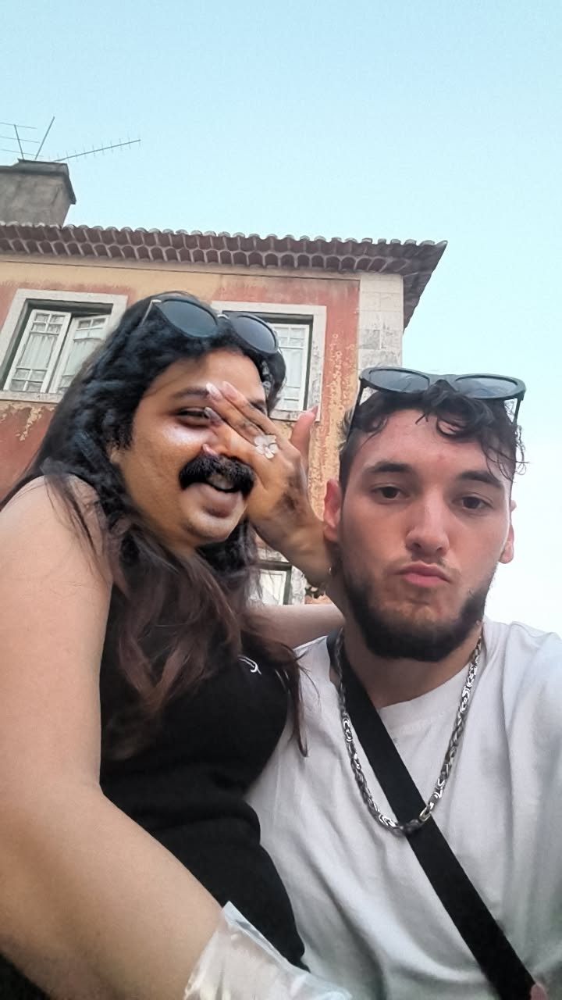
When you left, I told you for an hour, all the way until I went to sleep: it was really hard to say goodbye to you. I think it was the same for you. But like you said, these aren't goodbyes. It's just a see you soon before we find each other again.
And anyway, we text every day and call each other almost every day, so it's impossible to truly feel alone.
Anyway, my love… Lisbon was incredible.
I want to live all of this again and again. I already miss it. I already miss you.
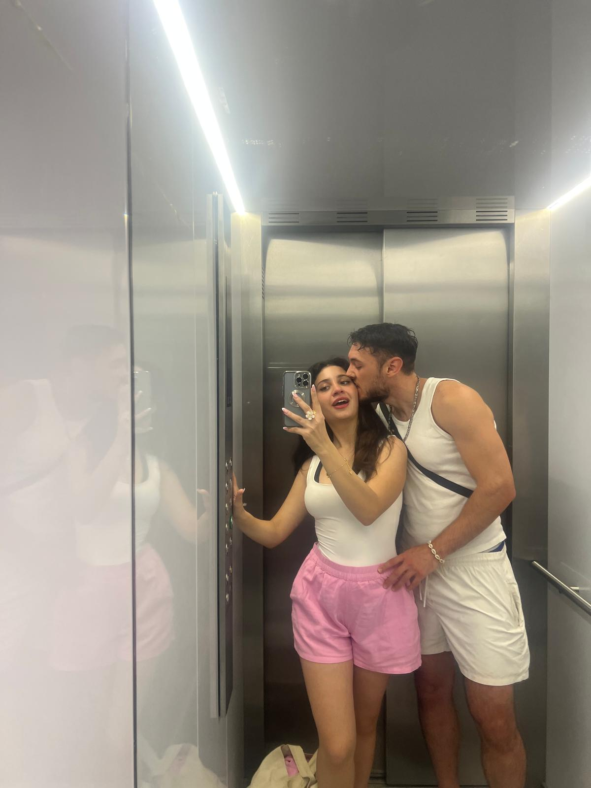
Thank you for everything.

I could never thank life enough for putting such an incredible woman as you in my path. I am so grateful to have you by my side, and I promise I will do everything I can to make you as happy as possible.
Obrigado, meu amor. ❤️
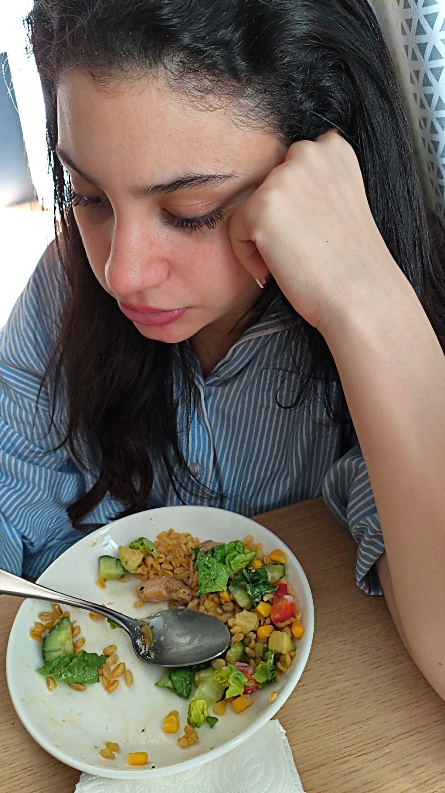
The next destination might not be written yet. But what I know is that I want to keep taking flights, taking trains, covering the miles, and looking forward to the next moment I get to see you again.
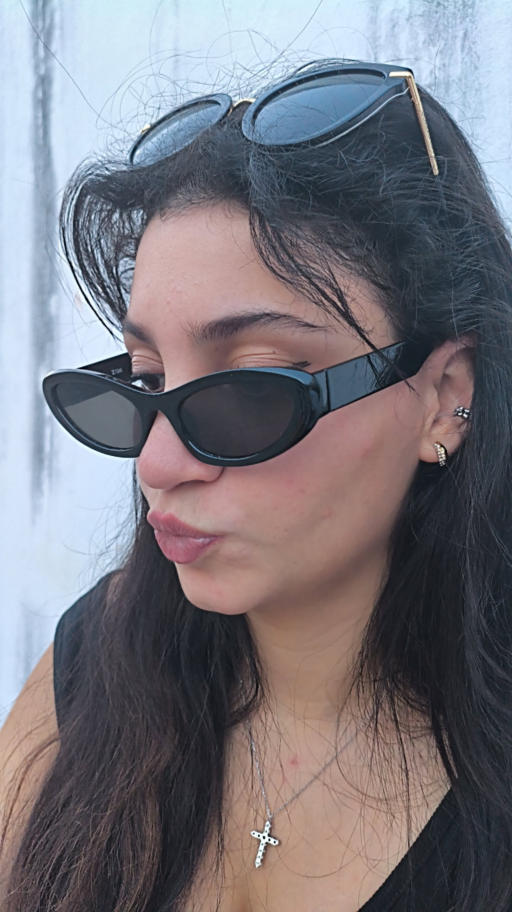
Maybe writing all of this made me a little emotional, I have to admit. There are so many things I feel for you that I don't always know how to put into words, but I wanted to do

For your 23rd birthday, I just want you to know how happy I am to have met you, and how much you mean to me. I hope this new year of your life will be even more beautiful than the ones before it, and that you will receive as much happiness as you give me every single day.

The more time passes, the more certain I become that it's you. That it's us. What we have feels so natural, so deep, and sometimes almost impossible to explain. There's a connection between us that I don't think I'll ever fully be able to put into words. I just know that I feel it, and I know how special it is.
One day, there won't be a distance between Nantes and Vienna anymore. There won't be flights to book or days to count until we see each other again. One day, we'll simply be together. And when that day comes, I know we'll look back at all of this and realize that every mile was worth it.
We don't have the easiest relationship, especially with the distance between us, and yet, somehow, everything between us feels so easy. Until then, I'll keep choosing you, loving you, missing you, and looking forward to every next moment with you. Our love is stronger than anything life can put between us. Feel me holding you in my arms and kissing you until I have no strength left
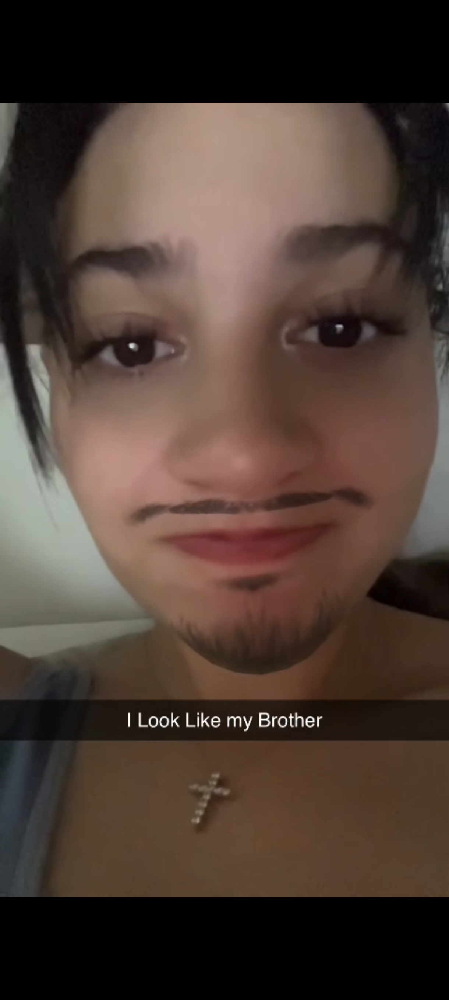
Lisbon was full of ups and downs, but my love for you only knows one direction: up. I hope you enjoy the gifts I gave you, even though you got them before your birthday, it's the thought that counts—believe me. Once again, happy birthday, my love. My moon, my all. ❤️
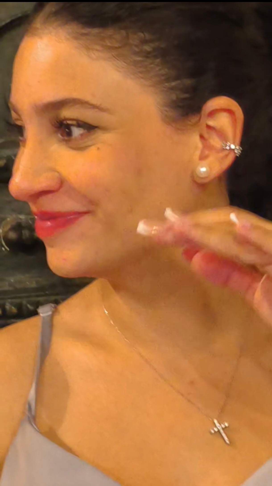
Je t'aime ❤️ much much much.
ARRIVED
DESTINATION: YOU